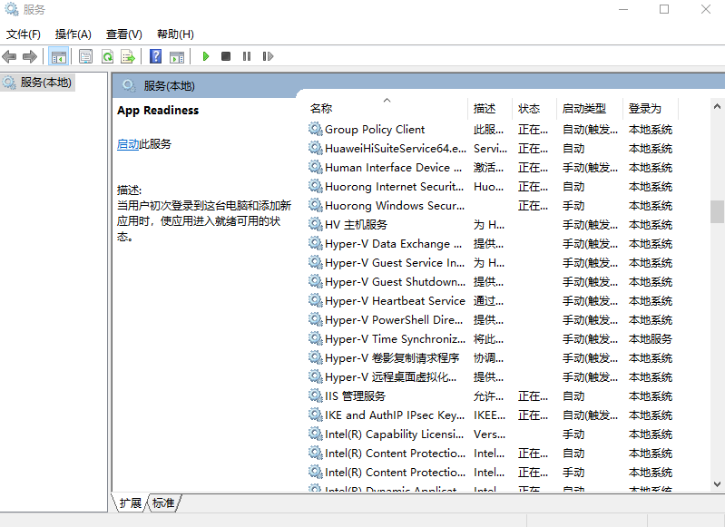

本文列出一些常用的 windows cmd命令，使用windows + r键后输入命令或者打开cmd.exe命令提示符输入，其中cmd命令提示符可以通过使用windows + r键后输入cmd打开
杀掉进程
1 | $ taskkill /im chromedriver.exe /f |
切换盘符目录
切换到其它盘1
2
3
4
5
6
7
8
9# 方法1
C:\Users\10287>d:
D:\>
# 方法2
C:\Users\10287>cd /d d:
D:\>
设置windows系统时区
参考：https://winaero.com/blog/set-time-zone-windows-10/1
2
3
4tzutil /l //查看所有可设置时区
tzutil /g //查看当前时区
tzutil /s "China Standard Time" //设置时区
tzutil /s "China Standard Time_dstoff" //关闭夏令时
打开资源管理器
1 | explorer |
关机重启
shutdown /? 查看帮助信息
关机1
2
3
4shutdown -s -t 60 # 60s 后关机
rononce -p # 15s 后关机
shutdown -s -t 0 # 立即关机
shutdown -p # 立即关机
或者使用wmic命令：1
wmic process call create shutdown.exe
重启1
2shutdown -r -t 60 # 60s 后重启
shutdown -r -t 0 # 立即重启
休眠1
shutdown -h
在rononce -p、shutdown -s或者shutdown -r倒计时结束之前执行shutdown -a可以取消关机或者重启操作
按住 shift 并点重启可以使重启后进入 BIOS
windows远程管理
1 | mstsc |
无法远程复制文件问题：
- 结束进程rdpclip.exe
- 重新开启进程：win + r 输入rdpclip.exe
windows计算器
1 | calc |
打开记事本
1 | notepad |
打开系统属性窗口
1 | sysdm.cpl |
打开系统属性窗口后，点击【高级】，可以打开【环境变量】设置系统环境变量
打开控制面板
1 | control |
打开剪贴板
Win10：windows + v
打开屏幕键盘
1 | osk |
服务设置
1 | services.msc |

注册表编辑
1 | regedt32 |
任务管理器
1 | taskmgr |
写字板
1 | write |
画图板
1 | mspaint |
防火墙
1 | firewall.cpl |
其它
重置 Windows 10 本地帐户密码：https://support.microsoft.com/zh-cn/help/4028457/windows-10-reset-your-local-account-password
本文标题:常用Windows cmd命令
文章作者:hiyo
文章链接:https://hiyongz.github.io/posts/windows-shell-command/
许可协议:本博客文章除特别声明外，均采用CC BY-NC-ND 4.0 许可协议。转载请保留原文链接及作者。